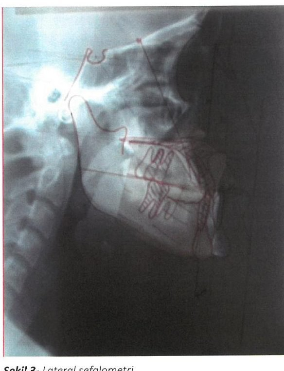

| Konu | Obstrüktif uyku apne sendromu — tetkikler, evreleme, AHİ eşikleri, cerrahi başarı, HGNS ve GLP-1/GIP tedavisi |
|---|---|
| Sistem | Uyku cerrahisi — üst solunum yolu |
| Süre | ~25 dakika |
| Kaynak | SFORL 2022 DISE kılavuzu · AASM 2021 cerrahi konsültasyon kılavuzu · SURMOUNT-OSA (NEJM 2024) · STAR (NEJM 2014) · Zhou 2021 MMA/MLS meta-analizi · Önerci Cilt 5 · Gün 16 notu |
“Aorusal” = arousal — apneyi sonlandıran, EEG'de görülen kısa uyanıklık reaksiyonu. Hastalığın hem kurtarıcısı hem de zararının kaynağı.
Mallampati tek bir bakış (dil-damak ilişkisi); Friedman bunu tonsil boyutu + VKİ ile birleştiren, cerrahi başarıyı öngören bir evreleme.
AHİ tek başına cerrahi kararı vermez. Kılavuzun kriteri AHİ değil, CPAP'ı tolere edememek. AASM 2021: CPAP'a uyumsuz ve VKİ <40 ise uyku cerrahına, VKİ ≥35 ise bariatrik cerraha yönlendir.
Başarı: MMA %85, çok seviyeli cerrahi %65, HGNS %66 yanıt. Tirzepatid AHİ'yi 25-29 olay/saat düşürüyor — kilo dışında hipoksik yükü, hsCRP'yi ve kan basıncını da düzeltiyor.
Türkçe metinlerde “arousal” olarak geçer, karşılığı uyanıklık reaksiyonu ya da mikro-uyanma. Tanımı: uyku sırasında EEG'de aniden ortaya çıkan, en az 3 saniye süren frekans değişimi (alfa, teta veya >16 Hz aktivite). Hasta tam uyanmaz, çoğu zaman farkında bile olmaz.
OSAS'ta arousal iki yüzü olan bir olay:
Apne döngüsü ve arousal'ın yeri. Arousal olmasa hasta apneden çıkamaz; ama her arousal bir sempatik boşalmadır ve uyku mimarisini bozar. Gündüz uykululuk, hipertansiyon ve kardiyovasküler risk bu tekrarlardan doğar. (Görsel bu not için çizildi.)
Nerede karşına çıkar:
Kısa cevap: Mallampati bir muayene bulgusu, Friedman bir evreleme sistemi. Friedman, Mallampati'yi içine alır ve iki değişken daha ekler.
Modifiye Mallampati sınıflaması. Friedman'ın kullandığı versiyon dil ağız içindeyken bakılır (klasik anestezi Mallampati'sinde dil dışarı çıkarılır) — bu ayrım önemli, çünkü dil dışarı çıkarıldığında görüntü yapay olarak iyileşir. (Görsel bu not için çizildi.)
Brodsky tonsil derecelendirmesi. Friedman evrelemesinin sezgiye ters gelen yanı burada: büyük tonsil kötü değil, cerrahi için iyi haberdir — tıkanıklığın hedeflenebilir bir kaynağı vardır. (Görsel bu not için çizildi.)
| Evre | Mallampati | Tonsil büyüklüğü | VKİ |
|---|---|---|---|
| Evre 1 | 1, 2 | 3, 4 | <40 |
| Evre 2 | 1, 2 | 1, 2 | <40 |
| Evre 3 | 3, 4 | 3, 4 | <40 |
| Evre 4 | 3, 4 | 0, 1 | >40 |
Friedman evreleme skalası. Kaynak: Gün 16 notu (Önerci Cilt 5 ve Koç C kaynaklı).
| Mallampati | Friedman evrelemesi | |
|---|---|---|
| Nedir | Tek bir muayene bulgusu | Üç değişkeni birleştiren evreleme sistemi |
| Neye bakar | Dil kökü ile yumuşak damak ilişkisi | Mallampati + tonsil boyutu + VKİ |
| Kökeni | Anestezi — zor entübasyon öngörüsü | Uyku cerrahisi — palatal cerrahi başarısı öngörüsü |
| Ne söyler | Orofarenks dar mı | Bu hastada UPPP/palatal cerrahi tutar mı |
| Pratik değeri | Tek başına cerrahi kararı verdirmez | Evre 1'de palatal cerrahi başarısı yüksek, evre 3-4'te düşük |
Mallampati 4 olan iki hasta düşün. Birinin tonsilleri 3-4 (Friedman evre 3), diğerinin 0-1 ve VKİ 42 (evre 4). Aynı ağız içi görünüm, tamamen farklı cerrahi beklenti. Mallampati'ye bakıp durursan bu ikisini ayıramazsın. Friedman, tıkanıklığın hedeflenebilir bir dokusu var mı sorusunu cevaplar — cerrahi kararın özü budur.
| Tetkik | Nasıl yapılır | Üstünlüğü | Sınırı |
|---|---|---|---|
| Polisomnografi (PSG) altın standart |
Uyku laboratuvarında, teknisyen gözetiminde gece boyu eş zamanlı kayıt: EEG, EMG, EOG (nörofizyolojik) + EKG, oro-nazal hava akımı, torako-abdominal hareket, SpO2 (kardiyorespiratuar) + pozisyon | Uyku evrelerini görür → arousal ve RERA sayabilir, dolayısıyla RDI hesaplanabilir. Santral apneyi ayırır. Eşlik eden uyku hastalıklarını yakalar | Pahalı, yatak sınırlı, laboratuvar uykusu doğal değil ("ilk gece etkisi") |
| Evde poligrafi | Taşınabilir cihazla evde: hava akımı, solunum çabası, SpO2, nabız. EEG yok | Ucuz, ulaşılabilir, doğal uyku ortamı | EEG olmadığı için arousal görülemez → RERA sayılamaz, RDI hesaplanamaz. Toplam uyku süresi bilinmediğinden AHİ olduğundan düşük çıkar |
| DISE ilaç-indüklenmiş uyku endoskopisi |
Ameliyathanede, propofol ile (tercihen hedef-kontrollü infüzyon) uyku benzeri sedasyon; fleksibl endoskopla dinamik kollaps izlenir, VOTE ile raporlanır | Uykudaki gerçek kollapsı gösteren tek yöntem. Seviyeyi, şeklini ve derecesini birlikte verir — cerrahiyi buna göre seçersin | Sedasyon doğal uyku değil; gözlemciler arası değişkenlik; anestezi gerektirir |
| Müller manevrası | Hasta uyanıkken, ağız ve burun kapalıyken zorlu inspiryum yaparken fleksibl endoskopla kollaps izlenir | Poliklinikte, anestezisiz, hemen yapılabilir | Uyanık hastada yapılır — uykudaki kollapsı öngörmede zayıf, hasta eforuna bağımlı |
| Lateral sefalometri | Standardize edilmiş baş-boyun lateral radyografisi; referans noktaları arasında mesafe, açı ve alan ölçümü | Ucuz ve kolay; kemik ve yumuşak doku sınırları net — iskeletsel darlığı (retrognati, dar posterior hava yolu) gösterir. MMA planında değerli | İki boyutlu — hacimsel ölçüm yapılamaz, uyanık ve dik pozisyonda çekilir |
| Akustik refleksiyon | Gönderilen ses dalgalarının yansımasından üst hava yolu kesit alanı hesaplanır | Dinamik görüntüleme sağlar, non-invaziv | Anatomi hakkında kesin bilgi vermez |
| Floroskopi | Uyanık ve uykuda üst solunum yolunun hareketli görüntülenmesi | Dinamik | Kullanımı sınırlı; radyasyon |
| Epworth (ESS) | 8 günlük durumda uykuya eğilim, 0-3 puanlanır | Semptom yükünü sayısallaştırır, tedavi yanıtını izler | Subjektif; OSAS şiddetiyle zayıf korelasyon. >10 patolojik |
Kaynak: Gün 16 notu (Önerci Cilt 5, Koç C) · SFORL 2022 DISE kılavuzu. Radyolojik yöntemler OSAS'ta tanı değil, tedavi planlama aracıdır.

| Terim | Tanım |
|---|---|
| Apne | En az 10 saniye boyunca ağız ve burundan hava akımının bazale göre %90 ve daha fazla azalması |
| Hipopne | En az 10 sn süreli %30 hava akımı azalması + %3 O2 desatürasyonu ve/veya arousal (ICSD-3) |
| AHİ | Saatlik apne + hipopne sayısı |
| RDI | Saatlik apne + hipopne + RERA sayısı → AHİ'ye eşit veya ondan yüksek |
| Şiddet | Hafif AHİ 5-14 · Orta 15-29 · Ağır ≥30 |
Fransız KBB Derneği'nin 2022 kılavuzu, DISE'yi bir merak konusundan standardize bir işleme dönüştürme girişimi. 17 uzmandan oluşan komite, 5 başlık altında 29 soru inceledi ve GRADE yöntemiyle 30 öneri üretti — 10'u yüksek kanıt düzeyinde (Grade 1+/1−), 19'u düşük (Grade 2+/2−), 1'i uzman görüşü.
Beş başlık:
Kılavuzun kendi vurgusu şu: “zayıf veya yetersiz veriye dayanarak güçlü öneri yapılmamalıdır.” Bu yüzden 30 önerinin sadece üçte biri yüksek kanıt düzeyinde — DISE'nin ne kadar genç bir alan olduğunu gösteriyor.
Ortak paydası şu: hastaya cerrahi ya da ağız içi araç düşünüyorsan ve tıkanıklığın nerede olduğunu bilmiyorsan. Tipik durumlar — CPAP'ı tolere edemeyen ve cerrahi düşünülen hasta, daha önce yapılmış palatal cerrahiye rağmen devam eden OSAS, mandibular ilerletme aracı adayının seçimi, ve hipoglossal sinir stimülasyonu öncesi zorunlu değerlendirme.
Anestezide kılavuzun tercihi propofol, tercihen hedef-kontrollü infüzyon (TCI) ile — titre edilebilir ve tekrarlanabilir olduğu için. Yüksek dozda propofolün kollapsibiliteyi artırdığı ve tabloyu olduğundan ağır gösterebileceği akılda tutulmalı.
VOTE sınıflaması. Rapor “V2◎, O1↔, T1↕, E0” gibi yazılır: velumda tam konsantrik, orofarenkste kısmi lateral, dil kökünde kısmi anteroposterior kollaps, epiglot temiz. Bu tek satır hangi ameliyatın yapılacağını belirler — ve kırmızı kutudaki bulgu, HGNS adayını doğrudan eler. (Görsel bu not için çizildi.)
Cerrahi kararı AHİ eşiğiyle verilmiyor. AHİ hastalığın şiddetini söyler, hangi tedavinin uygulanacağını değil. Kılavuzların cerrahi için kullandığı ölçüt AHİ değil, “CPAP'ı tolere edemedi ya da kabul etmedi” ifadesi.
AASM 2021 kılavuzunun cümlesi tam olarak şudur: PAP'ı tolere edemeyen veya kabul etmeyen erişkin OSAS hastasında, alternatif tedavi seçeneklerinin hasta merkezli tartışılmasının bir parçası olarak uyku cerrahına yönlendirme konuşulmalıdır. Eşik AHİ değil, VKİ'dir.
Tedavi karar akışı. Dikkat: AHİ soldan sağa tedavi yoğunluğunu belirliyor, ama cerrahiye geçiş kapısı bordo kutu — yani CPAP başarısızlığı. Ağır OSAS'lı bir hasta CPAP'ı kullanabiliyorsa cerrahi gündeme gelmez; hafif OSAS'lı biri CPAP'ı tolere edemiyorsa gelir. (Görsel bu not için çizildi.)
1. Cerrahi olarak düzeltilebilir belirgin bir anatomik darlık varsa — örneğin Friedman evre 1, tonsil 3-4 bir genç hastada tonsillektomi ± palatal cerrahi CPAP denenmeden birinci seçenek olabilir. Burada “CPAP başarısızlığı” şartı aranmaz.
2. Nazal cerrahi ayrı bir kategori. Septoplasti/konka cerrahisi tek başına OSAS'ı çoğu zaman düzeltmez — ama CPAP basıncını düşürüp uyumu artırdığı için CPAP'ı burun tıkanıklığı yüzünden kullanamayan hastada endikedir. Amaç AHİ'yi düşürmek değil, CPAP'ı kullanılabilir kılmaktır.
Uyku cerrahisinde “başarı”nın klasik tanımı Sher kriteri: AHİ'de %50'den fazla azalma ve mutlak AHİ'nin 20'nin altına inmesi. “Kür” ise AHİ <5.
Cerrahi seviye haritası. DISE'nin işlevi tam olarak bu tabloda hangi sütuna gideceğini söylemek. Seviye belirlenmeden yapılan cerrahi — özellikle herkese UPPP — başarısızlığın en sık nedeni. (Görsel bu not için çizildi.)
| Yöntem | Cerrahi başarı | Kür (AHİ<5) | AHİ düşüşü | Majör komplikasyon |
|---|---|---|---|---|
| Maksillomandibular ilerletme (MMA) | %85,0 | %46,3 | −46,2 olay/saat | %3,2 |
| Çok seviyeli cerrahi (MLS) | %65,1 | %28,1 | −24,7 olay/saat | %1,1 |
| Hipoglossal sinir stimülasyonu | %66 yanıt | — | 29,3 → 9,0 (%68 azalma) | <%2 |
| Trakeotomi | ~%100 | — | Obstrüksiyonu tamamen atlar | Yaşam kalitesi bedeli ağır |
MMA ve MLS: Zhou N ve ark. Sleep Med Rev 2021;57:101471 — 20 MMA ve 39 MLS çalışması. HGNS: Strollo PJ ve ark. NEJM 2014;370:139-49 (STAR). MMA ayrıca LSAT'ı %13,5 artırıyor, ODI'yi −30,3 düşürüyor, ESS'yi −8,5 iyileştiriyor.
1. MMA en etkili üst hava yolu cerrahisi — MLS'ye göre hem başarı (%85 vs %65) hem kür (%46 vs %28) belirgin yüksek. Bedeli: majör komplikasyon üç katı ve minör komplikasyon oranı da daha yüksek.
2. “Başarı” kür demek değil. MMA'da bile hastaların yarısından azı AHİ<5'e iniyor. Hastaya anlatırken bu ayrım şart — hedef çoğu zaman hastalığı yok etmek değil, ağırdan hafife indirmek.
3. Tek seviye cerrahisi giderek terk ediliyor. Klasik UPPP'nin tek başına başarısı literatürde ~%40 civarında ve seçilmemiş hastada daha da düşük. Modern eğilim: DISE ile seviyeyi belirle, gerekiyorsa çok seviyeli ve doku koruyucu teknikler (ESP, BRP) kullan.
Tek tıkla açılan YouTube aramaları:
▶ Drug-induced sleep endoscopy (DISE) — VOTE sınıflaması
▶ Ekspansiyon sfinkter faringoplasti — cerrahi teknik
▶ Barbed reposition faringoplasti (BRP)
▶ Uvulopalatofaringoplasti (UPPP)
▶ TORS dil kökü rezeksiyonu
▶ Maksillomandibular ilerletme (MMA)
▶ Hipoglossal sinir stimülatörü implantasyonu
▶ Polisomnografi skorlaması — apne, hipopne, RERA, arousal
▶ Müller manevrası
Mantığı diğer bütün cerrahilerden farklı: doku çıkarmıyor, dokuyu çalıştırıyor. Hipoglossal sinirin dili öne çeken dallarını (genioglossus) solunumla senkron uyararak, inspiryum sırasında dil kökünü öne alıyor ve hava yolunu açık tutuyor.
Hipoglossal sinir stimülasyonunun çalışma prensibi. Üç implant parçası: hipoglossal sinire sarılan stimülasyon elektrodu, infraklaviküler jeneratör ve interkostal solunum sensörü. Uyarı sürekli değil — her inspiryumla senkron. (Görsel bu not için çizildi.)
126 hasta, çok merkezli prospektif kohort; CPAP'ı kabul edemeyen veya sürdüremeyen orta-ağır OSAS. 12. ayda:
| Ölçüt | Başlangıç | 12. ay | Değişim |
|---|---|---|---|
| AHİ (medyan) | 29,3 olay/saat | 9,0 olay/saat | %68 azalma |
| ODI (medyan) | 25,4 olay/saat | 7,4 olay/saat | %70 azalma |
| Epworth, FOSQ | Anlamlı iyileşme | — | |
| İşleme bağlı ciddi advers olay | <%2 | ||
Strollo PJ ve ark. Upper-airway stimulation for obstructive sleep apnea. N Engl J Med 2014;370(2):139-149.
Yanıt veren hastalar randomize edilip bir kola cihaz açık bırakıldı, diğer kolda kapatıldı. Devam grubunda AHİ 7,2'de kalırken, geri çekme grubunda 25,8'e fırladı (p<0,001). Yani düzelme cihazın kendisine bağlı — kilo değişimi ya da doğal seyir değil. Bu, tek kollu bir kohortun taşıyamayacağı bir kanıt.
Havuzlanmış 584 hastalık analizde (STAR + Almanya post-market + ADHERE kaydı + ABD retrospektif kohortu) daha iyi AHİ düzelmesiyle ilişkili üç değişken bulundu:
Aynı analizde 12. aydaki AHİ, 6. aydakinden anlamlı olarak yüksekti (+3,24 olay/saat) — yani etki zamanla bir miktar geriliyor. Hastaya bunu söylemek gerekiyor.
Klasik dışlama kriteri: DISE'de velumda tam konsantrik kollaps (CCC). Sebebi mekanik — dil öne çekildiğinde velum seviyesindeki halka şeklindeki kollaps açılmaz, cihaz o hastada çalışmaz. Bu yüzden DISE, HGNS adayında isteğe bağlı değil, seçim basamağının kendisi.
Diğer tipik kriterler: AHİ 15-65, VKİ <32-35, santral apne oranı düşük. (Merkez ve cihaz onayına göre eşikler değişir.)
Ek bulgu: ADHERE kaydında eşlik eden uykusuzluğu (insomni) olan hastalarda HGNS etkinliği ve cihaz kullanımı, insomnisi olmayanlarla aynı çıktı — üstelik uykusuzluk ve gündüz uykululuk skorları bu grupta daha fazla düzeldi. Yani insomni bir dışlama nedeni değil.
Kısa cevap: evet, ama etkinin ne kadarının kilodan bağımsız olduğu bu çalışmadan çıkarılamıyor. Bilinen şu: AHİ düşüşü çok büyük ve kilo dışındaki birçok parametre de birlikte düzeliyor.
SURMOUNT-OSA — iki paralel faz 3, çift kör, randomize çalışma. Orta-ağır OSAS + obezite. Trial 1: PAP kullanmayanlar. Trial 2: PAP kullananlar. Maksimum tolere edilen doz tirzepatid (10 veya 15 mg) ya da plasebo, 52 hafta.
SURMOUNT-OSA'da 52. haftada AHİ değişimi. Tedavi farkı Trial 1'de −20,0 olay/saat (%95 GA −25,8 ile −14,2), Trial 2'de −23,8 (−29,6 ile −17,9); ikisi de p<0,001. Ortalama başlangıç VKİ 39,1 ve 38,7. (Görsel bu not için çizildi.)
Kilo dışında düzelen parametreler — hepsi önceden belirlenmiş anahtar ikincil sonlanım ve hepsinde plaseboya üstünlük sağlandı:
| Parametre | Ne anlama geliyor |
|---|---|
| Hipoksik yük | Sadece olay sayısı değil, desatürasyonun derinliği ve süresi azalıyor — kardiyovasküler riskle AHİ'den daha iyi korele olduğu düşünülen ölçüt |
| hsCRP | Sistemik inflamasyon geriliyor |
| Sistolik kan basıncı | OSAS'ın en önemli kardiyovasküler sonucunda düzelme |
| Hasta bildirimli uyku bozukluğu ve bozulma skorları | Semptomatik düzelme |
| Vücut ağırlığı | Beklenen etki |
Malhotra A ve ark. Tirzepatide for the Treatment of Obstructive Sleep Apnea and Obesity. N Engl J Med 2024;391(13):1193-1205.
Söyleyebiliriz: Tirzepatid orta-ağır OSAS + obezitede AHİ'yi çarpıcı biçimde düşürüyor, hipoksik yükü ve kardiyometabolik belirteçleri düzeltiyor. PAP kullanan hastada bile ek fayda sağlıyor (Trial 2) — bu önemli, çünkü PAP zaten olayları baskılarken üzerine kazanç veriyor.
Söyleyemeyiz: “Etkisi kilodan bağımsızdır.” Çalışma böyle bir ayrım yapacak şekilde tasarlanmadı; kilo kaybı ile AHİ düşüşü aynı hastalarda birlikte gerçekleşti. Mekanizma büyük olasılıkla ağırlıklı olarak adipoziteye bağlı — üst hava yolu çevresi yağ dokusunun azalması, akciğer hacminin artması, farengeal kollapsibilitenin düşmesi. Bunun üstüne bir miktar doğrudan etki olabilir ama kanıtlanmadı.
Ve söylemeyi unutmamalı: Bu bir OSAS tedavisi değil, obezite tedavisiyle OSAS'ın düzelmesi. İlaç kesilince kilo — ve muhtemelen AHİ — geri geliyor. En sık yan etki gastrointestinal, çoğunlukla hafif-orta.
Arousal, apneyi bitiren mikro-uyanmadır; hipopne tanımının içindedir ve RDI'yi AHİ'den ayıran şeydir. Mallampati tek bir bakış, Friedman ise Mallampati + tonsil + VKİ'yi birleştiren ve palatal cerrahi başarısını öngören evrelemedir — büyük tonsil burada iyi haberdir. Cerrahi kararı AHİ eşiğiyle değil, CPAP intoleransıyla verilir; AASM 2021 eşiği VKİ'dir (<40 uyku cerrahı, ≥35 bariatrik cerrah). DISE uykudaki gerçek kollapsı gösteren tek yöntemdir ve VOTE ile raporlanır; SFORL 2022 bunu 30 öneriyle standardize etmiştir. Başarı sıralaması MMA (%85) > çok seviyeli cerrahi (%65) ≈ HGNS (%66 yanıt); ama MMA'nın majör komplikasyonu üç kat fazladır. HGNS doku çıkarmaz, dili senkron uyarır — DISE'de konsantrik velum kollapsı varsa aday değildir. Tirzepatid AHİ'yi 25-29 olay/saat düşürür ve hipoksik yükü, hsCRP'yi, kan basıncını düzeltir; ama bu obezite tedavisidir, bırakılınca etki geri gider.
Görseller: Lateral sefalometri Gün 16 notundan (Önerci Cilt 5 kaynaklı); diğer bütün şemalar bu not için çizildi. İnternetten gerçek klinik fotoğraf eklenemedi — konteynerin ağ çıkışı görsel sunucularını 403 ile reddediyor.